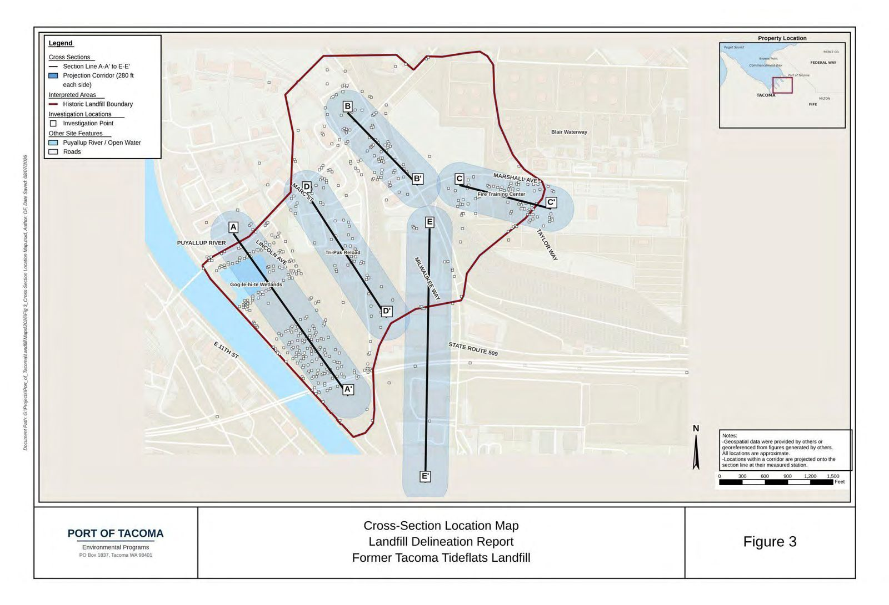
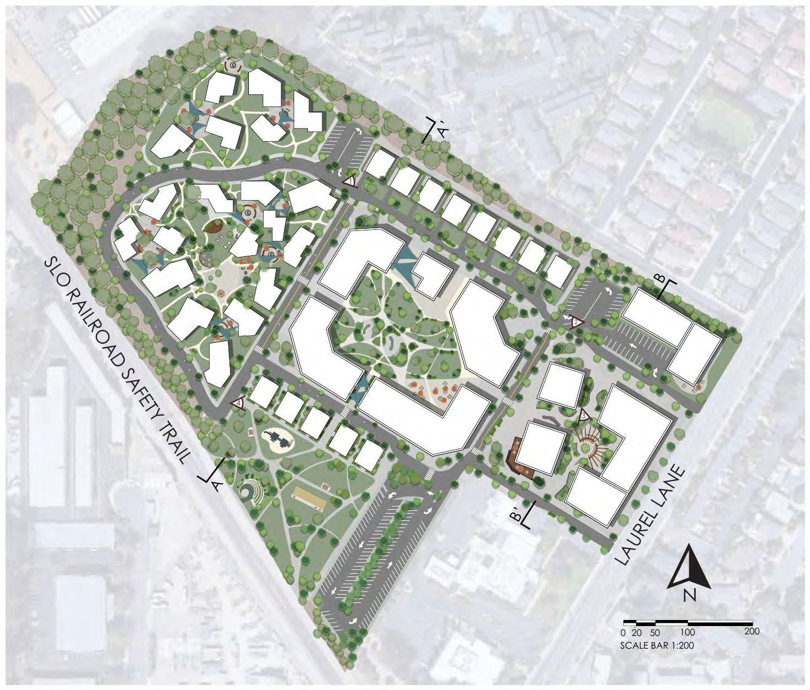
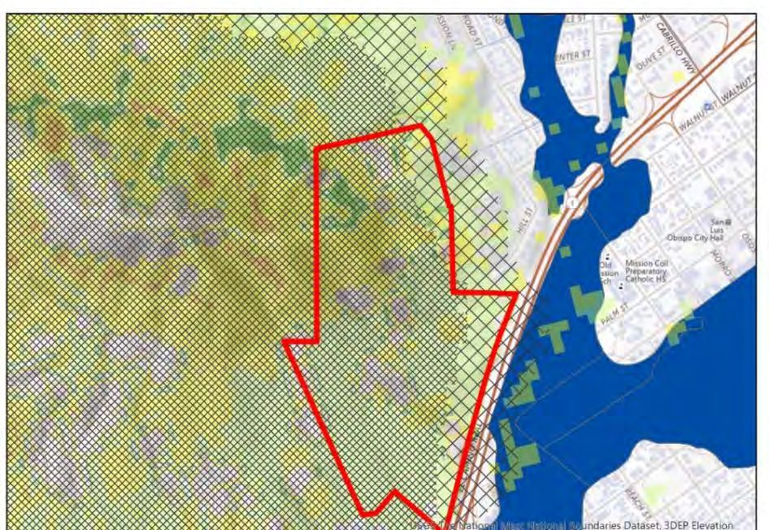
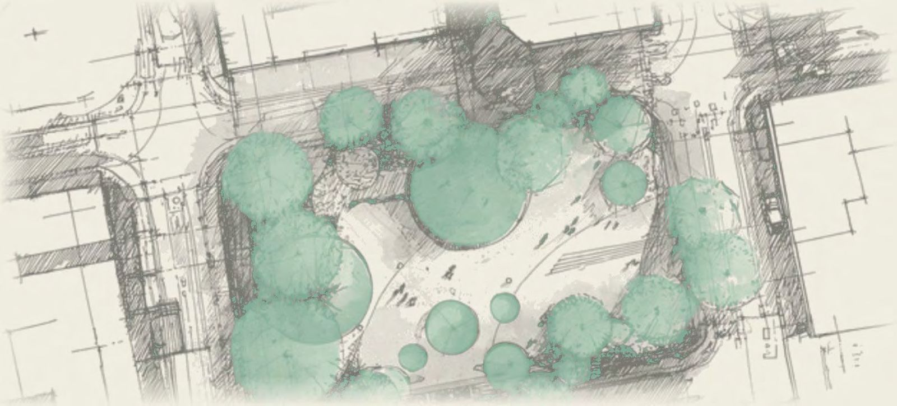

02.1Tacoma Tideflats Landfill Delineation
800+ field points from 40 years of reports turned into one geodatabase and five automated cross sections.
Read MorePlanner • GIS Analyst • Storyteller
At the Port of Tacoma I turned 40 years of field records into a single map of a former landfill. Now I'm a Student Researcher at Cal Poly's WUI FIRE Institute. Two seasons as a wildland firefighter shaped how I read a landscape.
More About MePlanning, GIS, and environmental work from studio, the Port of Tacoma, and the WUI FIRE Institute.

02.1800+ field points from 40 years of reports turned into one geodatabase and five automated cross sections.
Read More
01.1A 17-acre former industrial site in San Luis Obispo redesigned as a 230-home neighborhood.
Read More 03.1
03.1
Mapping how a community's plans affect wildfire risk, district by district.
Read More 02.2
02.2
Hydrographic surveys turned into gap-checked depth rasters clipped to the shoreline.
Read More 01.3
01.3
A car-oriented intersection redesigned with courtyard homes, bike lanes, and a public plaza.
Read More
03.2GIS constraints analysis that kept a hillside neighborhood off steep, fire-exposed terrain.
Read MoreYou have a remarkable ability to do the research, understand the complexities, and then communicate your findings confidently, clearly, and visually in a way that is both compelling and accessible.
Let's Connect
Looking for planning, GIS, and environmental planning roles.
